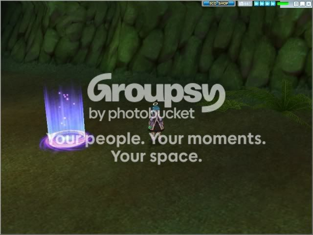
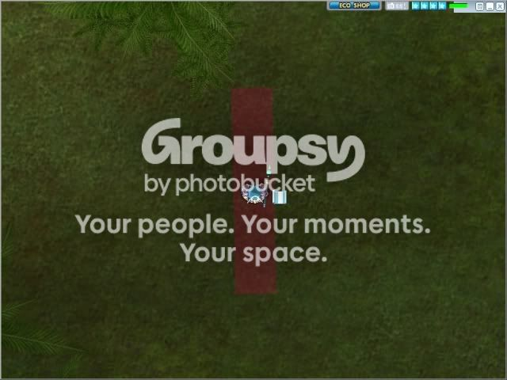
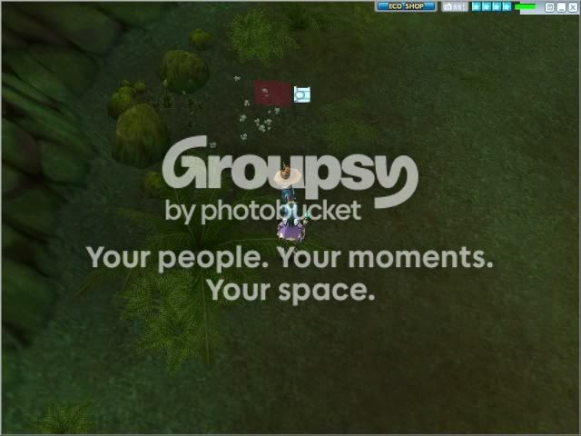
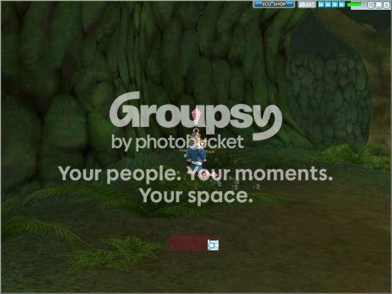
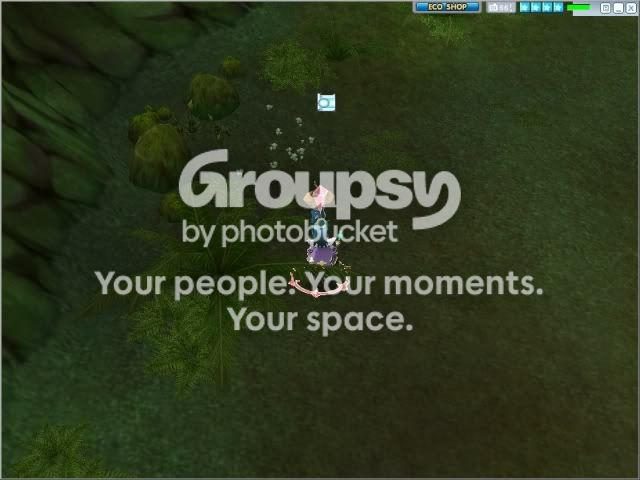
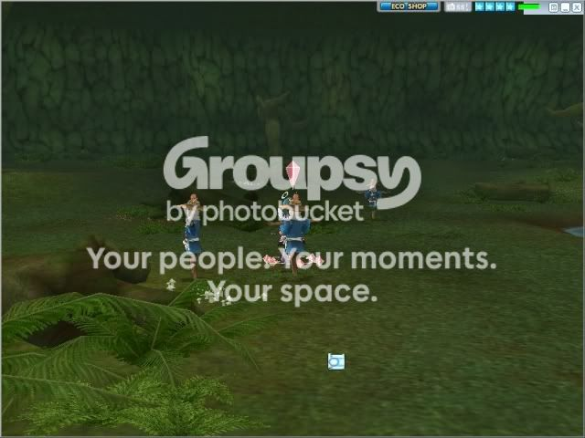
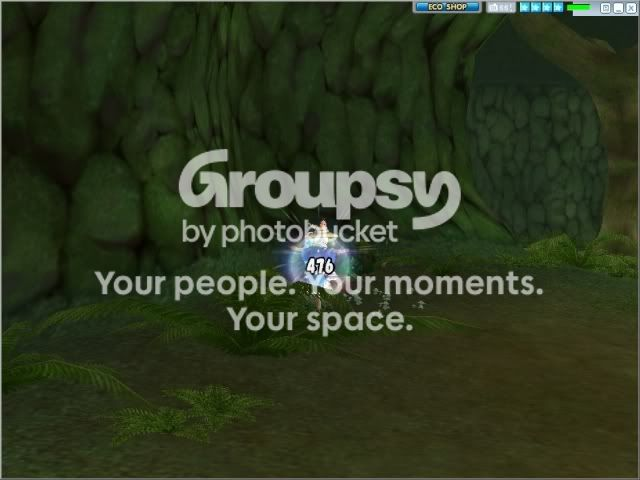
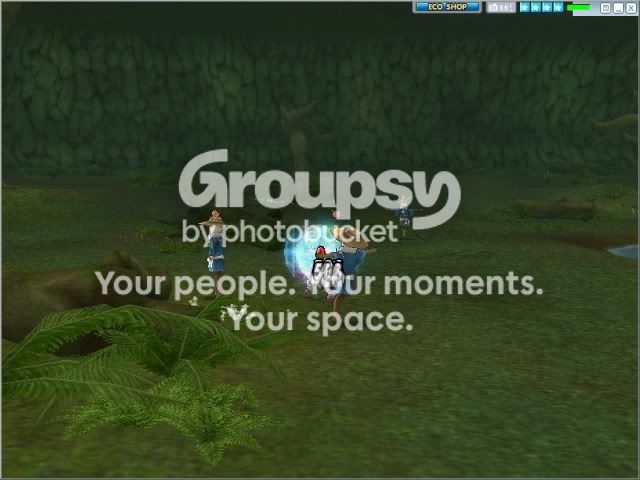
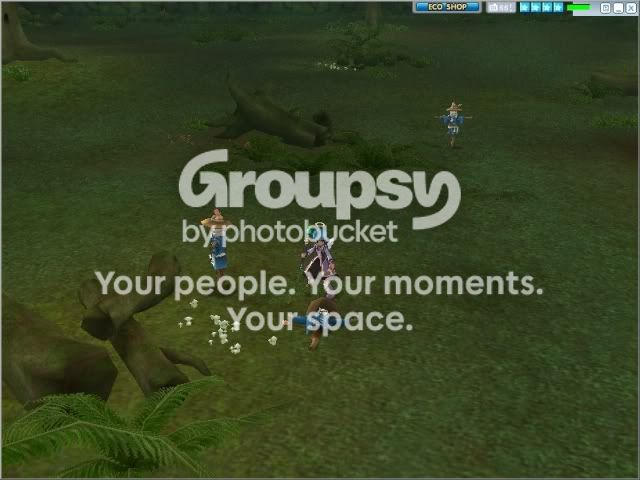

เอาล่ะๆ
เอาข้อมูลมาลงให้เพิ่ม
ข้อมูลนี้จะเป็นประโยชน์กับบุคคลตามเงื่อนไข ดังนี้
1.เป็นสายอาชีพ wizard (เออ แล้วนี่กระทู้อะไรเล่า)
2.มีเลเวลประมาณ 50+ ไปเรื่อยๆ
3.ต้องอัพท่า magic globe และ solid aura แล้ว
## ไกด์เฉพาะกิจนี้สอนเฉพาะ การฟัดกับไม้กางเขน Star tra เท่านั้น
รอยต่อสำคัญในการเติบโตจาก 50+ ขึ้นไป รวมถึงแหล่งเงินชั้นเยี่ยม
โหลดโหดเน้อ
เอาล่ะ พล่ามมามากละ - -
วิธีใช้โกลบ กับเจ้าไม้กางเขน
เรามาเริ่มไปทีละขั้นๆเลยดีกว่า
1.เข้าดันตะวันออกมาก่อน(ก้อมีที่นี่ที่เดียว จะบอกเพื่อ :evil: )

_________________________________________________________________________
2.ดับเบิ๊ลคลิกขวา เพื่อปรับทิศทางให้หันไปทางเหนือพอดีก่อนก็ดี
จากนั้นเวลาเคลื่อนที่ สำหรับมือใหม่ แนะนำให้พยายามวิ่งในแนว เหนือ-ใต้-ออก-ตก เสมอๆ
เพื่อความสะดวกสูงสุดในการยิงโกลบ
ในรูปแค่ให้ดูว่า ตอนนี้ตรงแนวอ่ะนะ จะใช้อะไรเช็คก็ได้ ที่มันมีสี่เหลี่ยมๆให้เล็ง(ก็ตัวโกลบเองนั่นแหละ)

_________________________________________________________________________
3.เดินหามันซักหน่อย(จะบอกทำไม อีกละ)
อ่า เจอแล้ว เป้าหมายของเรา
_________________________________________________________________________
4. รีบเดินไปข้างหน้ามัน แล้วโซลิดอย่างรวดเร็ว
จำคุณสมบัติ 8 ข้อได้ป๊ะ ถ้าไม่รีบ เด๋วมันจะอาละวาดซะก่อน
_________________________________________________________________________
5.จากนั้น กดโกลบทันใด แล้วลากพื้นที่ยิงสีแดงจากตัวเราออกไปข้างหน้าเรื่อยๆ
ระยะยังจะไปหยุดที่หกช่องทางด้านหน้า ที่จริงกดยิงเลยก็ได้ แต่ถ้าจะเอาให้คุ้ม
มาต่อขั้นต่อไปก่อน(ต้องทำติดกันจริงๆเลย)
เอามาเทียบสองรูปจ้า


_________________________________________________________________________
6.ขยับเมาส์ตรงออกไปไม่ต้องเร็วนัก ให้เลยระยะยิงปกติของโกลบไปหน่อย
ในเมื่อมันเลยระยะยิงไปแล้ว สี่เหลี่ยมเล็งสีแดงจึงไม่ปรากฏให้เห็นอีก
มีมาให้ดูสองมุม


_________________________________________________________________________
7.ทีนี้ก็ยิงได้เลย(อย่าให้จุดเล็งขยับนะ พอลากสุดเขตหวังผล ต่ออีกช่องแล้วกดยิงเลย)
ในเมื่อเราวางเมาส์ไว้เลยระยะหวังผลช่องนึง
ตัวเราก็ต้องเดินไปข้างหน้า 1 ช่องให้เข้าระยะยิง ซึ่งพอดีตรงกับจุดที่มอนยืนพอดีเสียด้วย
มีสองรูปเช่นเดิม จะเห็นได้ว่า ตัวละครขยับไปยิงทับกับมอนไปแล้ว

_________________________________________________________________________
8.ตัวโกลบเองจะถูกยิงจากตำแหน่งตัวเราออกไปเป็นเส้นตรงตามที่เล็งไว้
และในเมื่อเราอยู่ที่เดียวกับมอน มอนก็จะโดนตั้งแต่ตำแหน่งตัวเราเลย และถูกดันออกไปจนสุดระยะยิง
แต่ว่ามอนที่โดนจะฟาดเรากลับครั้งนึงตอนที่โดนตำแหน่งตัวเรานั่นแหละ
ในรูป มอนฟาดมาแล้ว โซลิดทำงานได้ราบรื่นดี(ติดขัดก็ซวยสิคุณ 8) )

_________________________________________________________________________
9.ในที่สุดมันก็ยอมจำนน จมธรณีไปแล้ว เราชนะ!!!
เอ่อ แต่เนื่องจากผม 80 แล้วครั้งเดียวจึงตาย
สำหรับมือใหม่ มอนจะไม่ตายเมื่อโกลบไปสุดตำแหน่งแล้ว
ไม่ต้องหนี มันจะวิ่งกลับมาตีใส่โซลิดเรา เราก็เล็งโกลบออกไปอีกครั้ง
แต่ครั้งนี้ให้สุดระยะยิงเป็นสีแดงพอ ไม่ต้องเลยไป
แล้วก็ยิงไปเรื่อยๆ จนกว่ามันจะตายนั่นเอง

น่าจำทำให้ท่านเข้าใจขึ้น ลองเอาไปยิงดูครับ
สิบตาเห็นไม่เท่าลงมือทำจริง
แล้วท่านจะเห็นว่า เรา แกร่ง :twisted:
อ้อ แถมๆ
คุณรู้จักเจ้ากางเขนตัวแสบดีหรือยัง
คุณสมบัติ 8 ข้อของ star tra
1.ถ้าไปเป็นกลุ่ม มันมักจะเลือกวิ่งหาตัวเวลต่ำกว่าบ่อยๆ 8)
2.ไปยืนกะมัน จะไม่มีทางรู้ว่าเมื่อไหร่มันจะพุ่งเข้าหา พร้อมระเบิดสกิลใส่ - -
3.ถ้าเราเดินผ่านมันไปแล้ว เรื่องแว้งกัดข้างหลังเตรียมตัวไว้
4.ถ้าคุณใส่สัตว์เลี้ยงหรือเนโกะ นี่แหละเป้ามัน
5.อยู่ตัวเดียวไม่ค่อยเท่าไหร่ ตีทีไรตัวข้างๆชอบเข้ามาจริงจริ๊ง
6.ชอบอัดสถานะผิดปกติ ติดๆกันอย่างบ่อย ผมเคยโดย 6 ทีติด - - แทบตาย
7.ชอบไปเกิด เอาตามซอกมุมพิลึกๆ เล็งโกลบลำบากชะมัด เจริญ :x
8.เป็นไม้กางเขนแท้ๆ ดันวิ่งเร็วยังกะมังกร

hock: